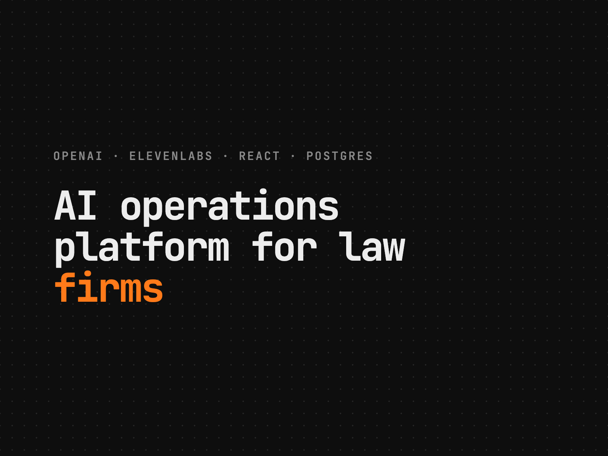

Case study · AI product
Salatan: AI Document Processing and Voice Agent for Lawyers
An AI operations platform for lawyers. I built the document reading, which runs OCR and lets an LLM classify each document and extract its key data, and a voice agent that calls new leads.

- Client
- Salatan
- Year
- 2025
- Type
- AI product
Context
Salatan is an AI operations platform for lawyers. It reads documents, transcribes calls, automates chats and calls, and lets lawyers query their cases with RAG.
A law firm receives its documents as scans and PDFs. Before any of the rest can work, the platform has to know what each document is and what it says.
What I built
Two parts of the platform are mine:
- The document reading. Scans and PDFs go through OCR, with Tesseract and OpenAI vision models. Then an LLM classifies each document and extracts its key data.
- A voice agent, built with ElevenLabs, that calls new leads, asks them a few questions and follows up. The team only talks to people who have already shown interest.
How I worked
The document reading runs in two steps on purpose: first turn the document into text, then understand it. Each step can be checked and improved on its own.
For the OCR I combined two tools: Tesseract and OpenAI vision models.
Stack
- Tesseract
- OCR for scans and PDFs.
- OpenAI API
- Vision models for OCR, and the LLM that classifies and extracts.
- ElevenLabs
- The voice agent that calls new leads.
- React, Vite, TypeScript
- The web app.
- PostgreSQL
- The database.
Pablo is brilliant at what he does and a pleasure to work with. He knows a huge amount, he's very professional, and he's the kind of partner you work with again.